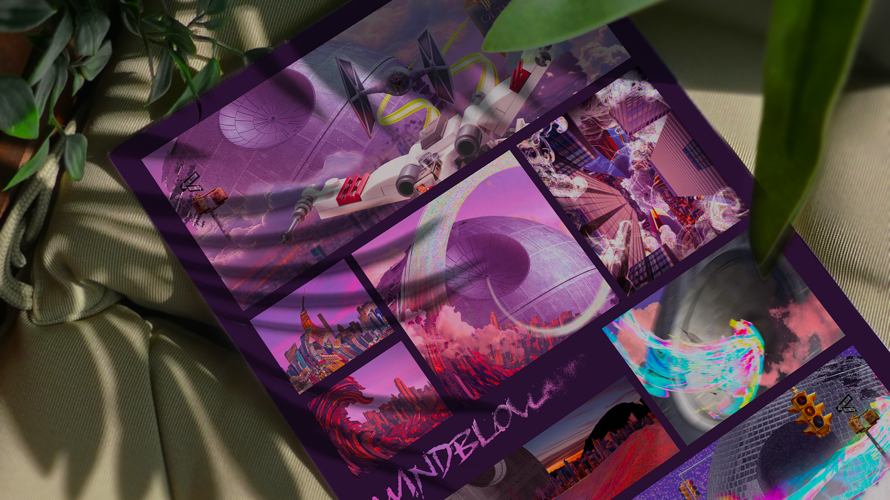
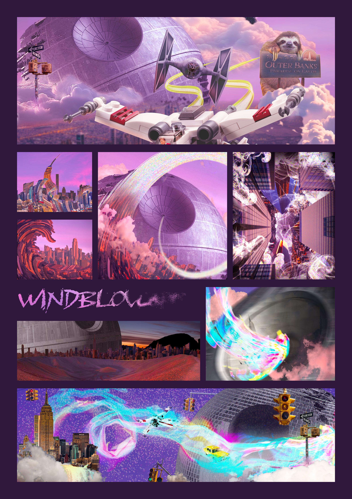
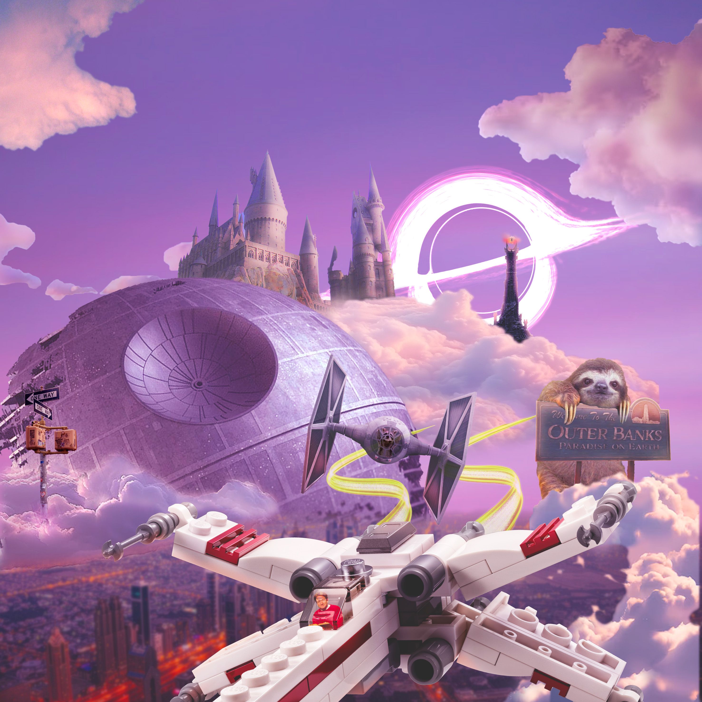
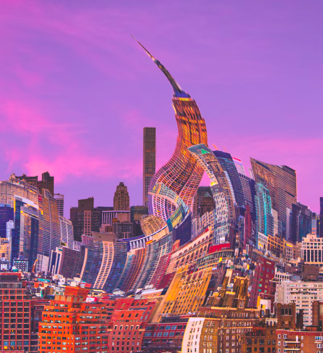
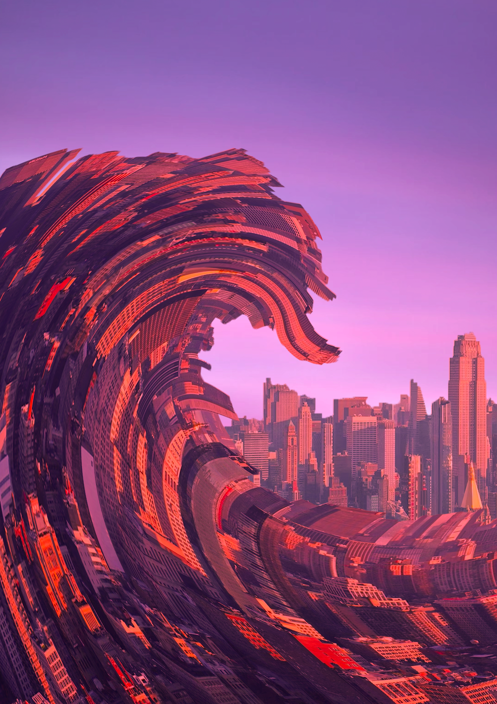
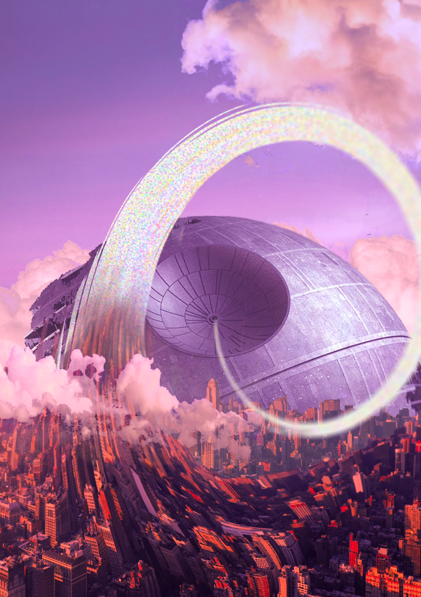
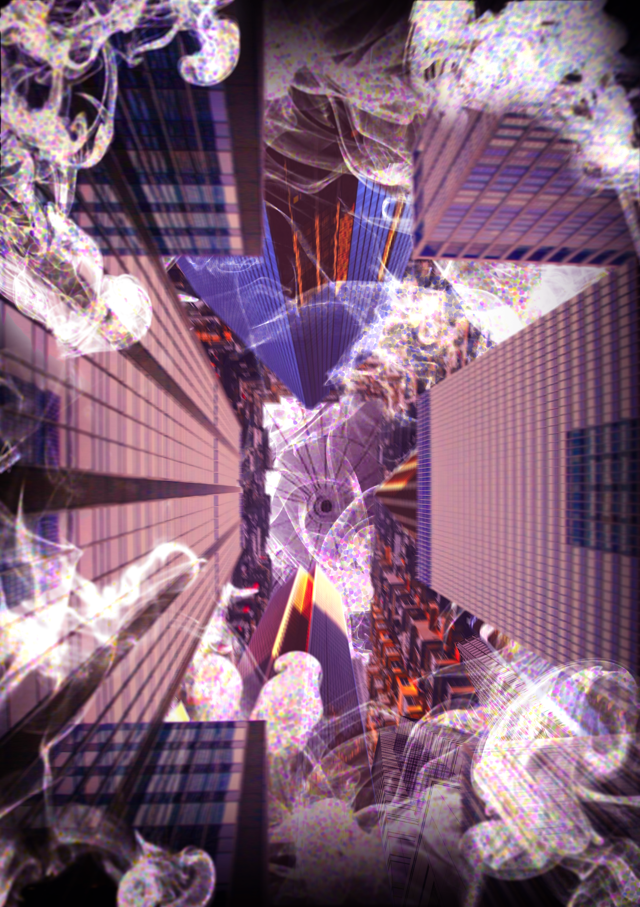
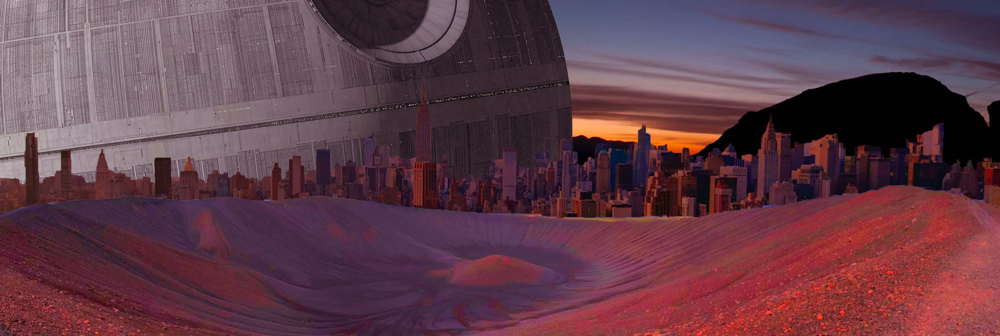
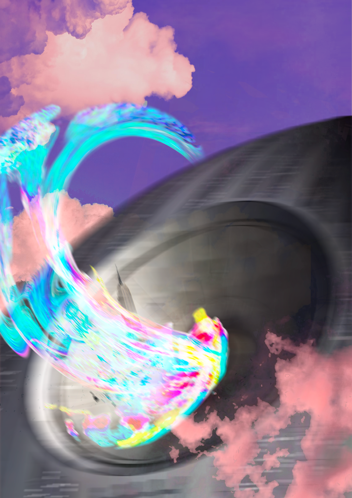
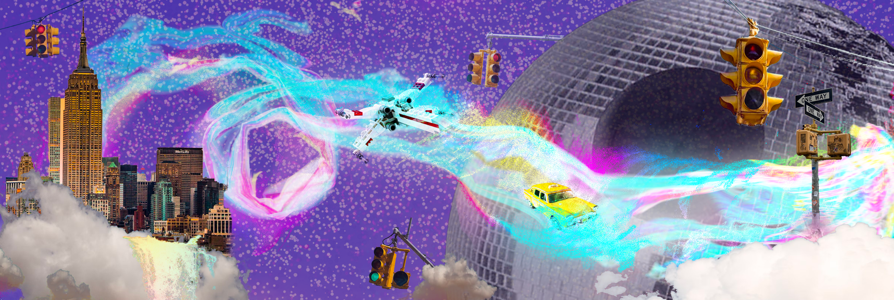

Autoportrait & Métamorphose — Bande dessinée expérimentale
Ce projet a débuté par la création d’un autoportrait graphique, conçu comme un assemblage d’éléments représentatifs de ma personnalité et de mes passions : paysages, couleurs marquantes, références à la pop-culture, etc. L’objectif était de construire une image symbolique, à la fois expressive et personnelle.
Une attention particulière a été portée à la cohérence graphique et à la colorimétrie, afin de créer une identité visuelle claire et harmonieuse. Le travail des formes, des contrastes et des palettes de couleurs permet de renforcer le lien entre les différents éléments et de donner à l’autoportrait une véritable unité esthétique.
La pièce maîtresse du projet consistait en la création d’une bande dessinée expérimentale, dont le point de départ narratif était cet autoportrait. Le récit se construit autour d’une métamorphose visuelle et symbolique du personnage, mêlant introspection, transformation et narration graphique. Ce travail d’évolution visuelle met en lumière l’importance des choix esthétiques dans la construction d’un univers personnel et créatif.








